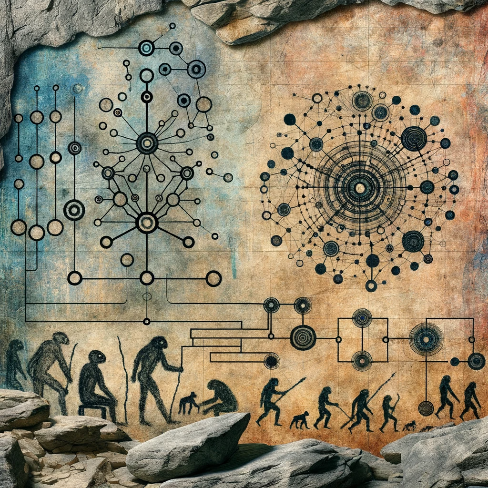

DataJoint’s History#
– by Dimitri Yatsenko
{kind=link}
The Genesis of DataJoint#
In the fall of 2009, during my graduate tenure at Baylor College of Medicine (BCM), a novel thought intrigued me: could database programming be tailored for scientific applications? I envisioned databases that could naturally mirror the intricacies of a scientific study and be easily navigable by a research team. This led me to devise the initial version of DataJoint for MATLAB, which I employed for my neurophysiology experiments.
The Early Days at BCM#
The backdrop to this innovation was my association with Dr. Andreas S. Tolias’s newly-minted lab in BCM’s Department of Neuroscience in 2008. The lab’s ambition was to adeptly manage the intricate data derived from neurophysiology experiments. A group of pioneering students and postdocs in the lab, namely Alex Ecker, Philipp Berens, Andreas Hoenselaar, and R. James Cotton, had initiated “Steinbruch” — a MATLAB-based library integrated with MySQL, focusing on data linked through computational dependencies.
My aspiration was clear: to architect a database design rooted in stringent principles, prioritizing data integrity and consistent transaction processing. I realized the glaring absence of computational dependencies in mainstream database models. DataJoint was my answer to this void.
By 2011, DataJoint had seamlessly integrated into our lab’s workflow, thanks to its early adopters, Manolis Froudarakis and Jacob Reimer. Recognizing its transformative power, Dr. Tolias championed its adoption. This validation led me to release DataJoint as an open-source project on Google Code.
In the autumn of 2009, while pursuing my graduate studies at Baylor College of Medicine (BCM), I began contemplating the potential of transforming database programming for use in scientific projects.
Rise to Prominence#
By 2014, the year I defended my thesis, DataJoint’s influence had transcended our lab, finding a home in global research institutions. The first neuroscience publications relying on DataJoint came from Laura Busse and Steffen Katzner’s labs at the University of Tübingen, Germany, in 2013.
Although I had initiated a Python adaptation of DataJoint in 2011, its development only picked up momentum when two other researchers in the lab, Edgar Y. Walker and Fabian Sinz, collaborated with me between 2014 and 2015 to launch a full-fledged Python package.
My postgraduate path at BCM coincided with the Tolias lab’s involvement in the IARPA MICrONS project — Machine Intelligence from Cortical Networks. DataJoint’s prowess in coordinating a dispersed, multidisciplinary team was undeniable, amplifying its adoption.
Creating a Business#
In 2016, four members of the Tolias lab — Dimitri Yatsenko, Jacob Reimer, Edgar Y. Walker, and Dr. Andreas S. Tolias — launched a commercial company, Vathes LLC, in response to DARPA’s commercialization initiative for neuroscience data tools and, in 2017, Vathes was awarded a Phase I SBIR grant to gauge DataJoint’s commercial viability. Edgar and I shared responsibilities managing the company on a part-time basis splitting our efforts with academic work. By 2018, we had added several key members: Shan Shen, Thinh Nguyen, Chris Turner, and Raphael Guzman, who would contribute substantially to DataJoint’s further development and integration into the workflows of large labs who had become our customers. Our growth trajectory, collaborations, and team expansions significantly shaped our understanding and approach to data-driven projects. Notably, collaborations with Prof. Carlos Brody and Prof. Karel Svoboda further propelled DataJoint’s adoption.
The Turning Point#
2020 was transformative. A sizable NIH grant of nearly $3.8 million to the company catalyzed the development of DataJoint Elements — a collection of reference implementations of DataJoint pipelines for neurophysiology studies. Subsequent months saw key leadership changes, with Dr. Kabilar Gunalan spearheading the DataJoint Elements initiative.
In 2021, with a renewed vision emphasizing commercial tech for research collaboration, Vathes underwent a metamorphosis — evolving its governance, mission, and team dynamics. The company rebranded as DataJoint, aligning with its core product. By then I had switched to a full-time role in DataJoint as CEO as we onboarded seasoned industry professionals: Jason Kirkpatrick (COO) and Monty Kosma (CPO) to fast-track our commercial product development. In 2022, the NIH awarded DataJoint a Phase II commercialization grant to build an online collaborative platform.
Today the company combines community-driven open-source development of core tools with a powerful online platform for hosting and operating DataJoint pipelines.